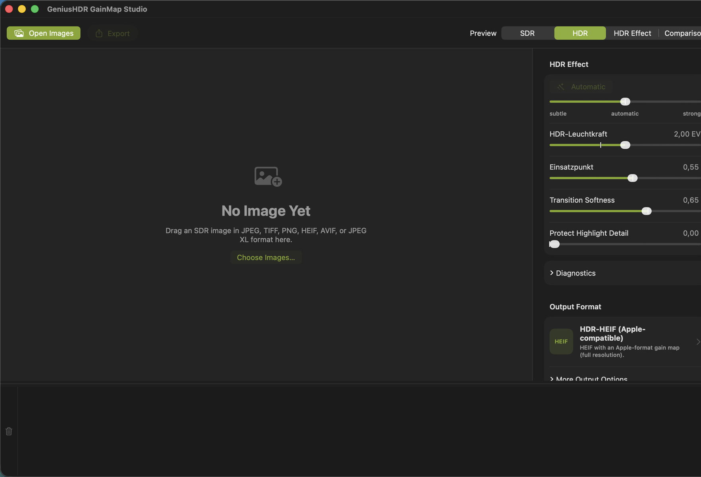

About This Guide
This guide explains how to use GeniusHDR GainMap Studio—from opening a developed SDR image and shaping the HDR effect to exporting an image with an HDR gain map. It is intended for photographers who want to add a controlled HDR presentation to their finished SDR development.
The labels match the English user interface of version 1.0. Minor interface changes may occur in later versions.
About GeniusHDR GainMap Studio

GeniusHDR GainMap Studio 1.0
GeniusHDR GainMap Studio creates an HDR target version from a developed SDR image and stores the difference as a gain map. Applications and displays that support the format can use it to reconstruct an HDR presentation. Other applications continue to show the embedded SDR base image.
The app provides Apple-compatible HDR JPEG and HDR HEIF output, standardized HDR JPEG and HDR HEIF output compliant with ISO 21496-1, and a conventional SDR JPEG. Scene-aware automation, manual controls, previews, and diagnostics help you adjust the effect in a controlled manner.
What a Gain Map Is
A gain map is an additional image in the output document. It describes how strongly individual image areas are raised relative to the SDR base image for HDR presentation. It is neither a second complete photograph nor a simple brightness mask.
The SDR base image remains the compatible presentation. A suitable playback system combines it with the gain map and metadata according to the display’s available HDR brightness.
Important: The HDR Effect view is an easy-to-understand representation of the brightness increase. It does not show the gain map stored in the exported file.
Requirements for HDR Display
GeniusHDR GainMap Studio requires macOS 26 or later. To make the HDR effect visible, you also need an HDR- or EDR-capable display and an application that interprets the relevant gain map format.
Apple XDR displays are particularly suitable, for example:
- the built-in Liquid Retina XDR displays of compatible MacBook Pro models,
- Apple Pro Display XDR.
Compatible HDR displays from other manufacturers can also present the HDR effect. The brightness and visible dynamic range actually achieved depend on the display, connection, macOS display settings, and the application being used.
On an SDR display or in an application without gain map support, only the SDR base image appears. This is intentional and does not mean that HDR data has been lost.
Key Terms
| Term | Meaning |
|---|---|
| Source SDR image | The opened, developed image and compatible base image of the HDR file. |
| HDR target version | The version calculated by GeniusHDR with an extended brightness range. |
| Gain map | An additional image describing the local amplification from the SDR base image to the HDR presentation. |
| EDR | Apple’s Extended Dynamic Range for HDR output on compatible displays. |
| EV | Exposure value. +1 EV corresponds to doubling the relative brightness. |
| Headroom | Available brightness range above SDR reference white. |
| Encoder | The component that writes the base image, gain map, and metadata to the output file. |
Supported Input Files
GeniusHDR GainMap Studio supports developed SDR images in the following formats:
- JPEG
- TIFF
- PNG
- HEIC and HEIF
- AVIF
- JPEG XL
Images already encoded as HDR or files containing an HDR gain map are not processed as a new SDR source. This prevents the app from unintentionally applying HDR amplification a second time.
Camera RAW files are not supported directly. Develop RAW files in RAW software first, then hand off the result in a supported SDR image format.
WebP, OpenEXR, Radiance HDR, and PIC are not supported input formats in version 1.0.
Color Management
GeniusHDR honors embedded ICC color profiles in the source image. These include sRGB, Display P3, Adobe RGB (1998), ProPhoto or ROMM RGB, and DxO WideGamut RGB. The profile is not simply replaced with another color space during import; it is used to interpret the image colors correctly.
During export, colors are converted colorimetrically to the destination color space: HDR output uses Display P3, while Standard JPEG (SDR) uses sRGB. If a source file does not contain an embedded ICC profile, GeniusHDR assumes sRGB as the source color space.
This means that wide-gamut TIFFs from an image editor, for example, can be used directly as source files. Manual conversion to sRGB or Display P3 beforehand is not required as long as the correct source profile is embedded in the file.
Opening Images from the Finder
Click Open Images in the toolbar or Choose Images… in the empty workspace. Select one or more supported files and confirm with Import.
Files clearly identified as unsuitable during the preliminary check may be disabled in the file selection dialog. During import at the latest, GeniusHDR checks fully whether a file already contains HDR information or an embedded gain map. Such files are not added as source images; the app displays an appropriate notice. You can also open supported files with GeniusHDR GainMap Studio from the Finder.
Drag and Drop and App Handoffs
Drag supported images from the Finder into the large preview area. You can hand off multiple files together.
Other applications can send images using Open With or a comparable app handoff. GeniusHDR can collect these images in the Studio or process them automatically with the background workflow. An app handoff is not a substitute for RAW development: handed-off camera RAW files are skipped.
Working with the Filmstrip
The filmstrip along the bottom of the window shows all loaded images as thumbnails. Click an image to activate it. Use the button on a thumbnail to remove an individual entry; the trash button on the left clears the entire list. The original files remain unchanged. Drag the upper edge of the filmstrip to adjust its height.
After an export, an image can be dimmed, marked with a green checkmark, or removed from the filmstrip, depending on the setting. This marking does not modify any file.
Multiple Selection
Hold down the Command key to add individual images to the selection or remove them from it. Use the Shift key to select a contiguous range. The toolbar shows the number of selected images.
Changes to the HDR controls apply to the current multiple selection. Export processes all selected images using their respective settings.
Existing Gain Maps and Finished HDR Images
If the app detects existing HDR information or an embedded gain map, it does not add the file as an editable source image. For a single affected file, the notice explains why it cannot be imported. In a multiple selection, unsuitable files are skipped and reported together.
Whenever possible, use the original developed SDR image for a new edit. Reprocessing a finished HDR file can distort the effect, color reproduction, and diagnostics.
Very Large Images and Panoramas
For very large images with a dimension exceeding 16,384 pixels, the app uses a reduced working preview for smooth, memory-efficient display. At high zoom levels, this preview may show less detail or display artifacts. The original file and export resolution are not changed by this preview reduction.
The output formats have different size limits. Any image whose dimensions exceed the selected format’s limit can be affected; panoramas are a typical example. Depending on the format, GeniusHDR offers to reduce the image size or switch to HDR JPEG before export.
Scene-Aware Automation
When an image is imported, GeniusHDR analyzes the subject and determines neutral starting values. The Automatic control shifts this baseline between subtle, automatic, and strong.
Scene-aware automation is a starting point, not an assessment of the photograph. Review especially bright areas afterward using the preview and diagnostics.
HDR Brightness
HDR Brightness sets the intended maximum brightness increase in EV. A higher value permits stronger highlights but may place greater demands on the display and output format.
Increase the value only as far as the desired image effect requires. A high setting does not automatically make every display brighter; playback adapts to the display’s available headroom.
Threshold and Transition Softness
Threshold determines the source brightness at which the HDR increase becomes stronger. Moving it to the right limits the effect more strongly to bright image areas. Moving it to the left includes larger areas.
Transition Softness controls how smoothly the amplification transitions into the HDR range. Soft transitions usually appear more natural, while tighter transitions can separate highlights more clearly.
Protect Highlight Detail
Protect Highlight Detail attenuates problematic very bright or colored areas. Use the control carefully: it can protect existing detail, but it cannot reconstruct detail already completely clipped in the source SDR image.
If the diagnostics show magenta areas, check the SDR development first. Developing the image again from the original may be more effective than applying a stronger correction in GeniusHDR.
Monochrome Gain Maps
GeniusHDR GainMap Studio uses monochrome gain maps. A shared amplification value describes the brightness increase for all color channels. This generally preserves the color balance established in the source SDR image.
Colored highlights are still derived from the SDR base image and the calculated HDR target version. If the diagnostics indicate additional export detail loss in such areas, first increase Image Quality or use a higher-quality or more suitable output format.
Resetting Controls
Double-click a control to reset it to the automatic value determined for the current image. Double-click the Automatic control to restore the neutral automatic position.
Resetting affects only the relevant editing value and does not modify the original image.
Settings per Image
During the session, GeniusHDR stores editing values separately for each image. When you switch images in the filmstrip, the associated values are restored.
For a multiple selection, new control values are applied to all selected images. Review individual images afterward if their subjects differ substantially.
SDR and HDR Preview
SDR shows the unamplified source image. HDR shows the reconstructed HDR result GeniusHDR creates for the current settings. On a compatible display, this is the most important view for evaluation.
The HDR preview is a color-managed EDR presentation. It does not guarantee that every other application will use the same maximum brightness.
HDR Effect
The HDR Effect view visualizes the image areas in which GeniusHDR raises brightness relative to the source SDR image. Dark areas remain largely unchanged; brighter areas indicate increasing HDR amplification.
This view is an easy-to-understand working aid for assessing the spatial distribution and strength of the HDR effect. It does not show the gain map stored in the exported file and must not be interpreted as its technical representation.
Use the view to determine whether the HDR increase remains targeted at highlights or affects larger image areas. Then judge the final image effect in the HDR view.
Comparison Views
Comparison displays the source SDR image and HDR result together. Use it to check that the SDR base image remains convincing and that the HDR effect provides a targeted enhancement.
Zoom and Full-Size Preview
Use Minus, Plus, or the zoom control to enlarge the preview. At 100%, one pixel of the displayed working image corresponds to one pixel of the canvas. Double-click the image or the white knob of the zoom control to switch between the fitted view and this 1:1 view. You can pan a magnified view with the mouse. At high magnification, inspect transitions, colored highlights, and fine structures. For very large images, the display is based on a reduced working preview, so not all details of the original resolution are available when zooming in closely.
Reduced full-size previews can produce display artifacts. In this case, assess the large-scale HDR effect in GeniusHDR and also inspect the exported file in a suitable destination application.
Understanding HDR Range Usage
The diagnostics evaluate the source SDR image and the generated HDR version. Where a direct encoder comparison is available for the current preview, they also take the actual decoded export into account.
| Value | Meaning | Practical Implication |
|---|---|---|
| HDR Range Usage | EV used relative to available headroom | Near 100% means high usage, but does not automatically indicate a problem. |
| Area at or Above +1 EV | Proportion of substantially raised image areas | Large values indicate a broad HDR effect. Moving the threshold to the right limits the affected area. |
| Very Bright Area Near the HDR Limit | Contiguous, genuinely very bright areas whose HDR effect may be too strong | If the area appears too dominant, reduce HDR Brightness or move the threshold to the right. |
| Highlights Already Lack Detail in SDR | Areas already clipped in the source image | Correct the SDR development if possible; GeniusHDR cannot invent lost detail. |
| Detail Loss from Export | Additional deviation of the decoded export from the HDR reference | Increase quality or use a higher-quality or more suitable output format. |
| Maximum HDR Increase | Greatest measured brightness gain | Describes a peak, not the effect across the entire image. |
| Measurable Image Area | Proportion with a reliable measurement | Low coverage makes area values less representative. |
A single reflection, star, or hot pixel intentionally does not trigger the same warning as a relevant contiguous area.
Understanding Warning Colors
The Show Warning Areas option overlays analysis markings on the preview. They are not exported.
| Color | Meaning |
|---|---|
| Yellow | Contiguous strong HDR areas raised by approximately +1 EV or more; no proven detail loss. |
| Red | Contiguous, genuinely very bright areas near the HDR limit whose effect may be too strong. Dark areas are not marked red solely because of high relative amplification. |
| Magenta | Highlights that contain no usable detail in the source SDR image. |
| Cyan | Additional detail loss in the decoded export compared with the HDR reference. |
Warning colors are decision aids. A yellow area can be an intentional creative choice; a red or cyan area calls for more deliberate review.
Applying Diagnostic Guidance Correctly
For large yellow areas, move Threshold to the right if you want to raise only the brightest areas. Reduce HDR Brightness if the overall effect is too strong.
Red areas indicate HDR brightness that may be too strong, but do not automatically mean visible clipping. If these areas appear too dominant, reduce HDR Brightness or move the threshold to the right.
For magenta areas, Protect Highlight Detail can soften the effect but cannot restore missing source detail. For cyan areas, increase Image Quality first; then try a higher-quality or more suitable output format.
Selecting an Output Format
Open the Output Format section in the inspector and select the desired format. Image control settings remain unchanged when you switch formats; only the encoder and container change.
Choose the format based on the destination application and required compatibility. Test important files in the actual destination application.
Apple-compatible formats are intended for applications that support Apple’s gain map presentation. ISO formats use a standardized gain map description compliant with ISO 21496-1. JPEG provides a particularly widely readable SDR base image; HEIF stores images more efficiently but requires suitable HEIF and gain map support in the destination application. No single format is therefore the best choice for every handoff.
HDR JPEG (Apple-Compatible)
JPEG with an Apple-format gain map. It provides broad JPEG compatibility for the SDR base image and can process image dimensions up to 65,535 pixels at full resolution.
Prefer this format for very large panoramas or an Apple-oriented JPEG workflow.
HDR HEIF (Apple-Compatible)
HEIF with an Apple-compatible gain map. It combines efficient storage with HDR playback in suitable Apple environments.
The maximum dimension is 16,384 pixels. For larger images, GeniusHDR offers to reduce the size or switch to HDR JPEG.
HDR JPEG (ISO 21496-1)
JPEG with a standardized HDR gain map compliant with ISO 21496-1, created with the Ultra HDR reference codec.
This is the app’s standardized JPEG output. GeniusHDR validates the generated file with the reference codec and, where available for the current image size, also considers the decoded export in the preview and diagnostics. The maximum dimension of this output format is 8,192 pixels.
HDR HEIF (ISO 21496-1)
HEIF or HEIC with HDR playback through a standardized gain map compliant with ISO 21496-1. The format uses the same image and gain map processing path as the other HDR outputs.
Use this format for applications and systems that support ISO 21496-1 gain maps in HEIF. Actual HDR playback depends on support in the destination application, operating system, and display. The maximum dimension is 16,384 pixels; for larger images, GeniusHDR offers to reduce the size or switch to HDR JPEG.
Standard JPEG without a Gain Map
A conventional sRGB JPEG without an HDR gain map. It contains only the SDR presentation and is suitable for applications or handoffs where HDR output is not required.
The HDR controls do not create a gain map in this format.
Single and Batch Export
Select one or more entries in the filmstrip and click Export. GeniusHDR uses the settings stored for each image.
In automation mode, newly arriving images are processed using their subject-specific automatic values. Existing original files are not overwritten.
Quality and Size Limits
Set image quality in the main window under Output Format → More Output Options. The value is saved. Higher quality can reduce cyan export losses but creates larger files.
| Format | Maximum Dimension |
|---|---|
| HDR JPEG (Apple-compatible) | 65,535 pixels |
| HDR HEIF (Apple-compatible) | 16,384 pixels |
| HDR JPEG (ISO 21496-1) | 8,192 pixels |
| HDR HEIF (ISO 21496-1) | 16,384 pixels |
| Standard JPEG | 65,535 pixels |
When size reduction is necessary, the gain map remains pixel-matched to the reduced base image.
Destination Folder and Subfolder Structure
In Destination Folder, choose the default output folder. macOS stores permission as a security-scoped bookmark. If the folder is moved, you may need to grant access again.
Under Settings → Folders, define the structure inside the destination folder. The capture date preferably comes from the image metadata; if it is missing, the folder structure uses the file date.
Filenames and Prefixes
Under Settings → Rename, enable automatic renaming. Options include the date, optional time, and a custom prefix for each output format. Under Prefix by Output Format, HDR HEIF (ISO 21496-1) also has its own setting. By default, both Apple-compatible HDR formats use the HDR prefix and both ISO 21496-1 formats use the ISO-HDR prefix; the prefix is disabled for Standard JPEG.
Technical handoff suffixes such as _openWith can be removed. If the destination name already exists, GeniusHDR automatically adds -2, -3, and further numbers instead of overwriting a file.
Behavior after Export
Under Settings → Folders, choose whether images from manual exports are dimmed, marked with a green checkmark, or removed from the filmstrip.
The background workflow has a separate setting. This choice changes only the filmstrip, not the exported files.
Automation Mode in the Studio
Export New Images Immediately processes newly arriving images without individual manual review. Before enabling it, GeniusHDR displays a confirmation and the destination folder.
Automation mode in the Studio applies only to the current session and is turned off when the app quits. Original images remain unchanged.
Background Workflow
The background workflow receives files from other applications while the source application can remain in the foreground. It uses the selected output format, saved destination folder, and the automatic values for each image.
The Process and Export Handoff Images Automatically switch remains saved until you turn it off. This distinguishes it from the session-based automation mode in the Studio.
Handoff from DxO PhotoLab
Develop the photo completely in DxO PhotoLab and hand off a supported SDR format to GeniusHDR. TIFF is suitable for high-quality intermediate files; JPEG can be used for more compact workflows.
A correctly embedded ICC profile in the developed file is honored. A wide-gamut file does not need to be converted manually to sRGB or Display P3 before handoff.
Camera RAW should not be handed off directly. GeniusHDR reports the file as not processed and waits for a developed version.
Handoff from Other Applications
Capture One and other applications can also use Open With or a comparable handoff. The handed-off file must be a supported developed SDR image.
Test the handoff first with a single image and verify the destination folder, filename, and output format.
Menu Bar Controls
The menu bar icon provides quick access to:
- turning the background workflow on or off
- output format
- destination folder
- latest background activity
- Open Studio
- Settings…
- Quit
All five output formats are available in the menu, including HDR HEIF (ISO 21496-1). The selection made there also applies to the background workflow.
Completion Notifications
After a successful background export, GeniusHDR can display its own completion banner with the filename, output format, and destination folder. The source application remains in the foreground.
Under Settings → Background Workflow, you can enable notifications and check them with Send Test Notification.
Using Unattended Processing Safely
Configure the destination folder, output format, folder structure, and filenames before processing a series. Then perform a controlled test export.
Review the latest background activity regularly. Successful automation replaces neither visual inspection of important images nor a backup of the original files.
Folders
In the Folders tab, configure the destination structure, destination prompt, and behavior after manual exports. Choose the default output folder from the menu bar icon or when prompted for a destination.
When Ask for Destination When Exporting is off, single, batch, and automatic exports use the saved output folder.
Background Workflow
In the Background Workflow tab, configure automatic app handoffs, the destination folder, behavior after successful export, and completion notifications.
These settings apply to the persistent handoff workflow. The Export New Images Immediately switch in the Studio remains separate.
Rename
In the Rename tab, control date information, style, format-specific prefixes, and removal of technical handoff suffixes.
Date prefixes use only the actual EXIF capture date, DateTimeOriginal. If it is missing, renaming adds no date. This differs from the fallback used for the folder structure.
Appearance
In the Appearance tab, adjust the neutral workspace brightness and the accent color of controls. The available choices are Orange, Turquoise, Lime, Lilac, Ocean Blue, and Neutral.
The workspace remains color-neutral. A change affects neither image data nor export.
Saved Settings
GeniusHDR saves the output format, quality, destination folder permission, folder structure, filename rules, appearance, and other settings. The settings persist after a restart.
For safety, Export New Images Immediately is excluded and always starts turned off after a restart.
Recommended Workflows
For controlled editing of an individual image:
1. Develop the photo in your RAW software as a balanced SDR image. 2. Open the developed file in GeniusHDR. 3. Start with scene-aware automation. 4. Review SDR, HDR, and HDR Effect. 5. Enable warning areas and review the diagnostics. 6. Choose the output format for the destination application. 7. Export and inspect the file in the actual destination application.
For a series, first establish a successful single-image test and only then enable automation or the background workflow.
Troubleshooting and FAQ
The Image Cannot Be Selected or Imported
Check that it is a supported SDR format. RAW, WebP, EXR, Radiance HDR, and PIC are not supported as editable sources. Files already encoded with HDR or a gain map may be disabled in the dialog during the preliminary check or rejected with a notice during import at the latest.
The HDR File Looks Like SDR
The application or display may not interpret the gain map. Open the file in a compatible HDR application on an HDR- or EDR-capable display.
Magenta Remains Visible after Correction
The affected detail is already missing in the source SDR image. Reduce the effect or develop the source image again with better highlight detail.
Cyan Appears in the Export
Increase Image Quality first. Then try a higher-quality or more suitable output format.
An Image Exceeds the Size Limit of the Selected Format
Observe the maximum dimension. For very large images, select HDR JPEG (Apple-compatible) or confirm the offered size reduction. This can affect any sufficiently large image, not only a panorama.
An App Handoff Does Not Export
Check the background switch, destination folder permission, and latest background activity. Camera RAW is not processed directly.
Supported Formats and Limitations
| Area | Supported |
|---|---|
| Input | SDR JPEG, TIFF, PNG, HEIC/HEIF, AVIF, JPEG XL |
| Output | HDR JPEG (Apple-compatible), HDR HEIF (Apple-compatible), HDR JPEG (ISO 21496-1), HDR HEIF (ISO 21496-1), Standard JPEG |
| Unsupported input | Camera RAW, WebP, OpenEXR, Radiance HDR, PIC |
| System | macOS 26 or later |
The visible HDR effect and format compatibility depend on the display and destination application. Keep the developed source image as well.
Privacy and Local Processing
Image processing takes place locally on the Mac. GeniusHDR requires access to the input and output locations you select. These permissions are managed through macOS security mechanisms.
The app does not upload images to an online service for HDR processing. Completion notifications are displayed locally by GeniusHDR.
Version History
Version 1.0 · 2026
- initial release
- Apple-compatible HDR JPEG and HDR HEIF output
- HDR JPEG and HDR HEIF compliant with ISO 21496-1
- SDR, HDR, HDR Effect, and Comparison previews plus HDR diagnostics
- batch, automation, and background workflow
Copyright and Third-Party Components
Copyright © 2026 Markus Ball. All rights reserved.
GeniusHDR GainMap Studio uses the Ultra HDR reference codec for HDR JPEG (ISO 21496-1). The associated license texts are included in the project or application distribution. Apple, macOS, HEIF, and other product names are trademarks of their respective owners.